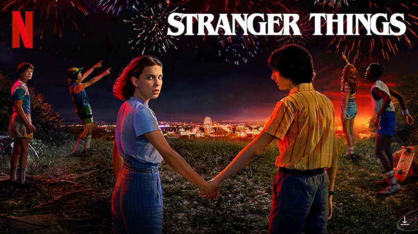
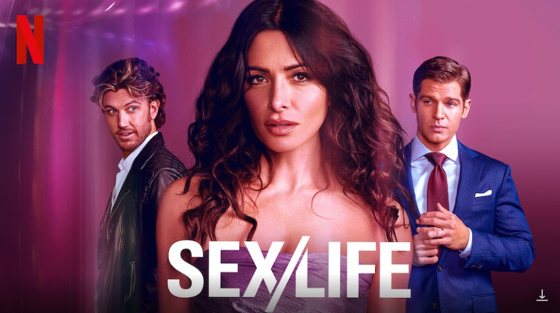
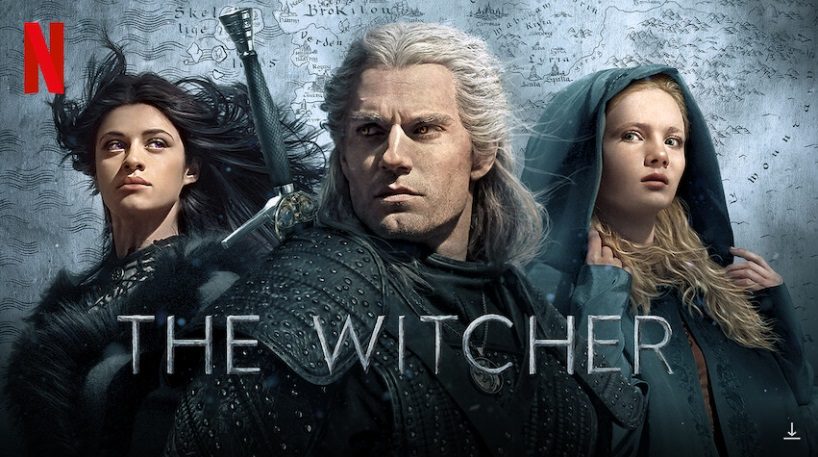
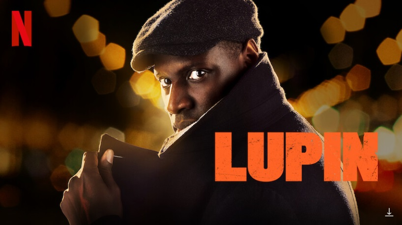
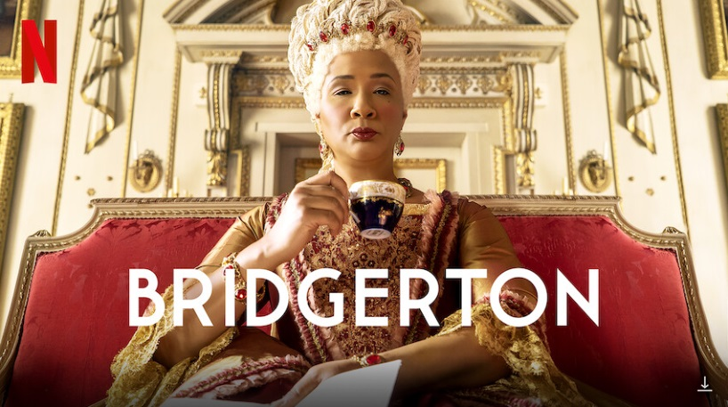

5. Дивні дива.
Про що серіал «Дуже дивні справи»:
Дії серіалу відбуваються в листопаді 1983 року в невеликому провінційному містечку Хоукінс, розташованому в штаті Індіана, де в місцевій лабораторії, що належить департаменту енергетики США, таємниче пропадає один із співробітників.
Через деякий час спокій тихого містечка порушує ще одне загадкове зникнення дванадцятирічного хлопця на ім'я Вілл, який, загравшись із друзями, повертався пізно ввечері додому, проїжджаючи велосипедом територією, що належала тій самій лабораторії. Наступного ранку, підозрюючи, що з сином щось сталося, стурбована мати, зателефонувавши родині друга і з'ясувавши, що дитини там немає, одразу ж звертається до поліції, сподіваючись, що вони допоможуть відшукати зниклого хлопчика.
Проте, дізнавшись про зникнення товариша, друзі Вілла вирішують не залишатися осторонь і розпочинають власне розслідування. Зустрівшись о десятій годині вечора, хлопці вирушають за передбачуваним маршрутом, яким міг повертатися друг. Тримаючи темної ночі під зливою, ледве пересилуючи страх, друзі раптово зустрічають посеред лісу дивну дівчинку. Незабаром наші герої починають підозрювати, що в місті відбувається щось дивне…
4. Секс/життя.
Про що серіал «Секс/життя»:
Мати двох дітей із передмістя у своїх фантазіях здійснює подорож алеєю спогадів, де її сімейне сьогодення стикається з безтурботним минулим.
3. Відьмак.
Про що серіал «Відьмак»:
Дія серіалу, заснованого на однойменній фентезі-сазі Анджея Сапковського, розгортається навколо відьмака Геральта з Рівії — найманця-мутанта, який спеціалізується на знищенні чудовиськ та веде кочовий спосіб життя, намагаючись знайти власне місце у жорстокому світі. Однак коли доля зводить Геральта з могутньою чарівницею Єнніфер і юною принцесою Цириллою з Цинтри, що зберігає похмурий секрет, відьмак виявляється втягнутим у жорстоке протистояння між двома войовничо налаштованими народами, що борються за владу над великими землями.
2. Люпен.
Про що серіал «Люпен»:
Події розвиваються навколо професійного злодія Ассана Діопа — єдиного сина іммігранта із Сенегалу, який перебрався до Франції, сподіваючись надати рідній дитині шанс на краще життя. Проте двадцять п'ять років тому Хуберт Пеллегріні, багатий і впливовий роботодавець отця Ассана, звинуватив іммігранта в крадіжці наречених діамантових, після чого несправедливо засуджений чоловік вчинив самогубство в тюремній камері. У наші дні, надихнувшись історією про невловимого злодія на ім'я Арсен Люпин, Ассан має намір зруйнувати життя Хуберта та його сім'ї, використовуючи злочинні навички, кмітливість і спрагу помсти.
1. Бріджертони.
Про що серіал «Бріджертони»:
Події розгортаються на початку XIX століття в Лондоні навколо багатої та поважної родини Бріджертон, що складається з леді Вайолет, яка овдовіла після смерті свого чоловіка Едмунда, та восьми дітей – чотирьох синів та дочок, названих в алфавітному порядку у міру свого народження. Брати і сестри навчаються жити у вищому суспільстві і відвідують костюмовані бали в пошуках відповідної пари. Їхня доля і репутація повністю залежать від прихильності британської королеви і пліток таємничої леді Вістлдаун.